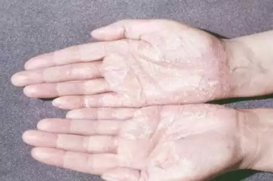
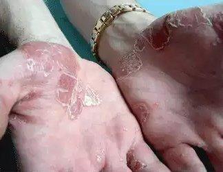
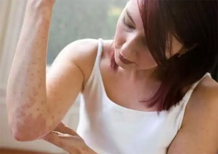

Bună! Mă numesc Linda Pop și am 36 de ani. Am decis să vă împărtășesc povestea mea despre cum am tratat psoriazisul. Subiectul este puțin sensibil, în special pentru femei. Nu este ușor să vorbești despre acest subiect… Psoriazisul este o boală complicată , care are, de asemenea, un impact estetic. Viața poate deveni o corvoadă atunci când ai plăci urâte pe piele. În afară de mâncărime, umflături și exfoliere, trebuie să faci față și celor care vorbesc despre tine pe la spate. Mulți chiar cred că psoriazisul este contagios. Așa că cei care suferă de psoriazis devin aproape izolați de societate și astfel nu pot trăi o viață normală... Am o vârstă la care poți fi ușor rănit de părerile celorlalți, iar acest lucru s-a dovedit a fi prea greu chiar și pentru mine...
Această poveste a început acum aproximativ cinci ani. Într-o zi făceam duș, dar, apoi am simțit niște coji pe piele, în zona cotului. Acestea au fost primele zone afectate de inflamație. Arătau ca niște plăci rozalii și erau tari cu niște coji. Am aplicat o cremă cosmetică pe suprafața respectivă. Credeam că este vorba doar de piele uscată, rezultatul îngrijirii mele neadecvate. Vreau să spun că am întotdeauna grijă de mine și aleg cu atenție ce produse cosmetice și de îngrijire personală să folosesc. Nu am avut niciodată o alergie.
După aproximativ trei săptămâni au început să se dezvolte niște plăci neobișnuite și m-am cam îngrijorat. Am consultat imediat un dermatolog. După o inspectare atentă și o analiză a rezultatelor, diagnosticul a fost psoriazis. Am fost șocată! Doctorul mi-a prescris terapia obișnuită. Produse pe bază de hormoni (creme și loțiuni) și un program homeopat (baie cu săruri și ierburi marine). Tratamentul a avut numai rezultate temporare. Plăcile s-au decolorat, iar celelalte simptome (mâncărime cu reacții inflamatorii) au dispărut. Cu toate acestea, după ce am oprit tratamentul intensiv și am început întreținerea, toate problemele au revenit. Mai mult decât atât, după tratamentul cu hormoni, plăcile au început să se dezvolte mai rapid. Toate acestea au durat aproximativ 2 ani și jumătate. Apoi psoriazisul s-a extins pe întreaga suprafață a ambelor mâini. Am fost șocată să observ semne ale bolii, de asemenea, pe picioare și fese! Apoi, aproape că am înnebunit. Situația chiar s-a înrăutățit din cauza panicii mele. Atunci când am văzut comentariile altor persoane care sufereau de psoriazis, am devenit chiar și mai stresată. Unii nu au putut să se vindece timp de 15-20 de ani. Alții au trăit cu această boală întreaga lor viață...
Cumpăram în disperare din farmacii diferite produse împotriva psoriazisului. Creme, dropsuri, spray-uri, orice… Am încercat metode alternative de tratament, cum ar fi spa-uri cu un fel de nămol special. Odată chiar am încercat să „exorcizez” boala cu un descântec străvechi. Bineînțeles că nu s-a produs niciun rezultat. Problema mea îmi afecta viața și slujba într-un ritm rapid. Mă simțeam stânjenită din cauza aspectului meu, care mă făcea să fiu irascibilă, agresivă și hipersensibilă. Și nu vedeam nicio lumină la capătul tunelului...
Am auzit de de la o prietenă. Aceasta este în favoarea tratamentelor naturiste care nu implică „substanțe grele” cum ar fi hormonii. După întreaga mea experiență cu diferitele medicamente, nu mi-a luat mult să fiu convinsă. Am cumpărat imediat de pe site-ul producătorului și am început tratamentul. Nu aveam nimic de pierdut, decât timpul și energia mea… Ca să fiu sinceră, după atâtea încercări nereușite de vindecare, nu mai speram să obțin un efect favorabil. Cuvintele doctorului meu cu privire la faptul că produsele naturiste sunt inutile pentru o problemă pe care hormonii nu au reușit să o învingă erau înrădăcinate în mintea mea.

După 10 zile de tratament cu , am observat rapid că nu mai aveam senzația de mâncărime și arsură. Câteodată chiar uitam cu desăvârșire faptul că sufeream de psoriazis... De asemenea, aspectul pielii mele s-a schimbat. Plăcile au început să se estompeze, iar reacțiile mele inflamatorii au dispărut! Exfolierea a dispărut, iar pielea mea a devenit din nou netedă! Nu îmi venea să cred! Am aplicat pe noile plăci, iar acestea au încetat să se dezvolte, apoi au dispărut complet! Reușita tratamentului meu cu m-a impresionat într-adevăr și așteptam cu nerăbdare să termin tratamentul. După o lună, urmele bolii erau aproape invizibile! Pielea mea părea exact ca în perioada de dinaintea bolii. Nu mai aveam plăgi pe piele, nici coajă sau alte semne ale psoriazisului. Nimic!
După aproximativ trei luni, îmi revenisem aproape de tot. Nu mi-au mai apărut alte plăci, iar cele de dinainte s-au transformat în puncte minuscule pe care numai eu le puteam observa. Cu toate acestea, odată cu trecerea timpului, acestea au devenit din ce în ce mai mici, apoi au dispărut complet. Acum utilizez în mod proactiv, o dată la două luni. Poate să nu fie necesar. Dar oricum nu are contraindicații sau efecte secundare, așa că poate fi utilizat chiar și după terminarea tratamentului. Nu pot descrie în cuvinte cât sunt de fericită! Sincer îmi doresc ca experiența mea să îi ajute pe toți cei care au nevoie de un tratament special să înceapă o nouă viață mai sănătoasă fără psoriazis!

Acum vă voi împărtăși informații cu privire la compoziția produsului. conține 5 ingrediente principale.
- Ceară de Candelilla - Acesta are proprietăți de calmare și ajută la eliminarea senzației de mâncărime. De asemenea, are un ușor efect analgezic pentru piele și încheieturi.
- Unt de shea - Acesta are proprietăți antibacteriene și ajută la vindecarea rănilor. Este ingredientul principal care ajută la penetrarea ingredientelor active în straturile mai profunde ale pielii.
- Ulei de rapiță - Acesta reduce inflamațiile și controlează funcționarea glandei. Are un efect de calmare și alinare.
- Pantenol - Acesta reține umezeala din piele și ajută la o exfoliere mai puțin intensă. De asemenea, ajută la curățarea ușoară a suprafețelor afectate ale pielii. Are proprietăți antioxidante și oferă pielii vitamine și minerale.
- Dihidroavenanthramida D - Aceasta stimulează pielea și îmbunătățește funcțiile regenerative ale pielii. Elimină senzația de arsură și mâncărime și determină îndepărtarea plăcilor de pe piele.
Toate aceste componente igienizează pielea și previn pătrunderea diferitelor infecții în sistemul circulator. Echilibrează procesele metabolice în straturile mai profunde ale pielii, îmbunătățesc microcirculația și încetinesc procesul de divizare anormală a celulelor pielii.
Este important de înțeles că faptul că formula produsului conține numai ingrediente autentice. poate fi comandat numai de pe site-ul producătorului! În caz contrar, riști să cumperi un produs contrafăcut, care poate agrava evoluția bolii.
Compoziția specială a îi permite să fie utilizat în orice stadiu și formă a bolii. Totuși, trebuie menționat că nu vindecă stadiile grave ale bolii, însă ameliorează iritațiile și mâncărimea, hrănește și calmează pielea și previne răspândirea ulterioară a bolii. Este, de asemenea, posibil să fie utilizat în același timp cu metodele tradiționale. Apropo, și doctorul meu a fost surprins de rezultatele oferite de . Acum îl utilizez ca tratament primar sau suplimentar pentru vindecarea psoriazisului.
Din fericire, experiența mea vă poate ajuta să deveniți din nou sănătoși. Mi-ar face plăcere să răspund la toate întrebările voastre!
Comentarii
Elena,
Mulțumesc pentru informații! Îl voi încerca!
Victoria,
Mie psoriazisul mi-a apărut acum 9 ani... Am încercat atâtea produse!!! De ce nu mi-a recomandat doctorul meu acest produs? Este nou? 
Linda,
Acest produs, este, de fapt, un remediu nou. Probabil că doctorul nu știe de existența acestui produs.
Eva,
Da, este foarte important să utilizezi doar produsul autentic ! Din nefericire, după ce am cumpărat un produs contrafăcut, boala mea s-a înrăutățit! Acest produs nu este disponibil în farmacii…
Linda,
Remediul autentic este absolut necesar pentru o vindecare reușită. este rar întâlnit în farmacii. Nu se produce în cantități foarte mari. De aceea cea mai bună opțiune este să îl comanzi de pe site. Dacă îl achiziționezi astfel, îl vei obține mult mai rapid și în mod sigur!
Mihai,
Linda, abordez acest tip de medicină cu scepticism. Sincer, nu cred că prin combinarea unor uleiuri cu ingrediente antiseptice „chimice” poți vindeca psoriazisul. Tu fie ai suferit de o formă ușoară a bolii, fie nu ai suferit deloc de psoriazis!
Linda,
Mihai, diagnosticul a fost emis de un doctor cu renume și de înaltă credibilitate. Recunosc că nu mi-am neglijat situația în care mă aflam. Am consultat doctorul imediat după ce am remarcat primele simptome. Pe de altă parte, cunosc situații în care a ajutat foarte multe persoane care sufereau de psoriazis de 10 ani de zile sau poate și mai mult.
Maria,
Și eu mă aflu într-un stadiu incipient al bolii. Cu siguranță voi încerca acest produs! Nu vreau să îmi neglijez situația în care mă aflu.
Andrei,
Sunt de acord cu Linda! poate ajuta pe oricine, indiferent de stadiul bolii. Mi-am învățat lecția! Am urmat tratamente inutile timp de 7 ani. După ce am utilizat , am observat o ameliorare după numai o lună! Îți recomand să începi să utilizezi !
Valeria,
Trebuie să vă spun că l-a vindecat de psoriazis pe soțul meu în 2-3 luni. Stadiul bolii în care se afla nu era deloc incipient. Nu putea lua hormoni și, de asemenea, este alergic la creme. a fost pur și simplu perfect pentru el!
Ana,
Îți mulțumesc că ne-ai împărtășit experiența ta! Și eu am suferit de depresie la fel ca tine... Boala mea evoluează, iar tratamentele tradiționale nu ajută efectiv. 
Linda,
Ana, să nu te dai bătută! Totul va fi bine! Sunt convinsă că acest remediu te va ajuta cu siguranță!
Alex,
Pot utiliza dacă sunt alergic la ulei de rapiță?
Linda,
Ar fi mai bine să discuți despre acest lucru cu medicul tău! Nu îmi amintesc de un caz în care să fi cauzat o reacție alergică persoanelor care folosesc , chiar și în rândul celor cu simptome alergice permanente.
Cati,
Cum vindecă aceste uleiuri cauza bolii? Aceste urme pe piele reprezintă numai rezultatele bolii..
Linda,
Uleiurile nu te vindecă. Ajută corpul tău să lupte împotriva bolii. Acestea accelerează procesele metabolice ale pielii, furnizează vitamine și minerale, îmbunătățesc microcirculația etc. În general, creează o stare de sănătate mai bună.
Nicu,
Pare super, îl voi încerca! Mă deranjează foarte mult senzația de mâncărime, de asemenea, faptul că trebuie să îndur această boală!
Sandra,
Recunosc că m-a ajutat și pe mine, dar nu așa de rapid ca în cazul tău. Bineînțeles, din cauza faptului că eu sufeream de psoriazis de o perioadă mai îndelungată, de aproximativ 10 ani.
Ioan,
Tratamentul meu cu a durat 6 luni. Nu regret deloc! Acesta este singurul produs care treptat mi-a făcut viața mult mai ușoară. Toate celelalte produse nu au avut rezultate similare, chiar și după un an întreg.
Adina,
Povestea ta m-a ajutat foarte mult. Voi începe tratamentul și în sfârșit mă voi simți din nou sănătoasă!
Sabrina,
De ce continui să folosești chiar și după ce te-ai vindecat? Este necesar? Pot deveni dependentă?
Linda,
Bineînțeles că nu este necesar! De asemenea, nu poți deveni dependentă. În cazul meu au fost afectate suprafețe mari și mi-au rămas pete pe piele. Pot să spun că sunt ultra precaută, deși doctorul meu m-a informat că nu am de ce să mă îngrijorez.
Cati,
Îți mulțumesc pentru povestea pe care ne-ai împărtășit-o!!! M-a ajutat să cred că pot scăpa de psoriazis! Bineînțeles că vă voi împărtăși experiența mea după ce voi utiliza !
George,
Am încercat anul trecut. M-a ajutat foarte mult. Îl recomand cu căldură tuturor.
Ion,
Mama mea a folosit acest remediu timp de o lună. Acum este foarte fericită! Nu i-au apărut alte plăci, iar cele de dinainte s-au estompat și treptat au dispărut. Sper că va uita pentru totdeauna de psoriazis.